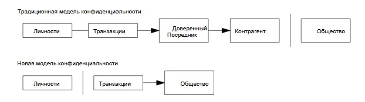

10. Конфиденциальность
Традиционная банковская модель поддерживает необходимый
уровень конфиденциальности, предоставляя доступ к информации лишь сторонам-
участницам и доверенному третьему лицу. Необходимость открытой публикации
транзакций исключает такой подход, однако приватность по-прежнему можно
сохранить, если публичные ключи будут анонимными. Открытой будет
информация о том, что кто-то отправил кому-то некоторую сумму, но без
привязки к конкретным личностям. Столько же данных раскрывается и на
фондовых биржах, которые публикуют время и объем частных сделок, не указывая,
между кем именно они были совершены.

Дополнительной защитой будет являться
генерация новой пары «открытый/закрытый ключ» для каждой транзакции: это
предотвратит связывание различных платежей с их общим отправителем или
адресатом. Некоторого публичного связывания все же неизбежать:
транзакции с несколькими входами доказывают, что эти суммы принадлежат одному
лицу. Риск состоит в том, что раскрытие личности владельца ключа
может привести к раскрытию и всех принадлежащих ему транзакций.